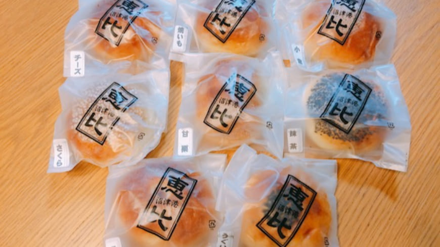
あんぱん専門店 恵比
定休日：日曜日 お土産・ベーカリー
営業時間：月～土8:00～17:00
日曜日+祝日が休み
公式サイト
沼津港深海水族館
定休日：無休 観光
営業時間：平・休日10:00～18:00
公式サイト
沼津バーガー
定休日：無休 飲食・ファストフード
営業時間：平・休日9:00～18:00
公式サイト
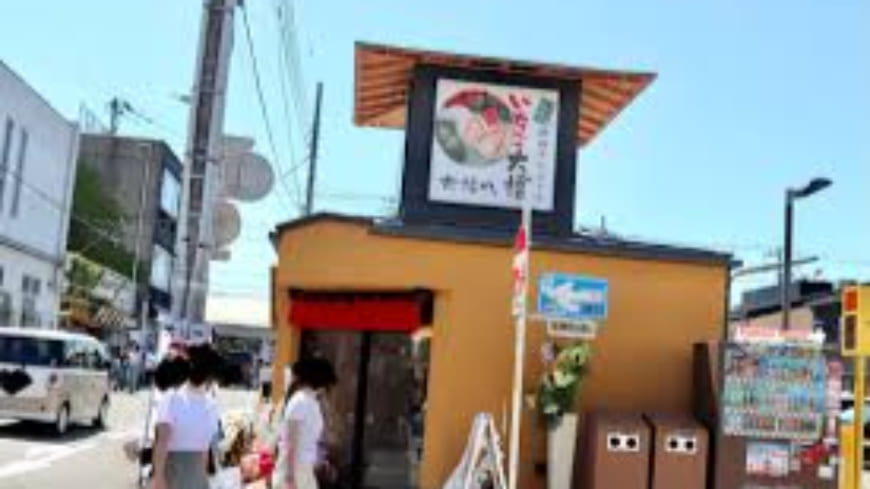
いちごプラザ大福や 沼津港店
定休日：水曜日 飲食・ファストフード
営業時間：平・休日9:30～16:00
公式サイト
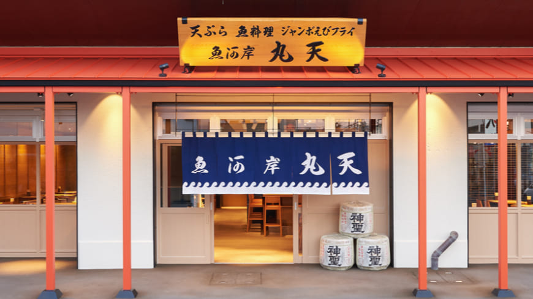
魚河岸 丸天 みなと店
定休日：木曜日 飲食・海鮮
営業時間：水10:00～20:00 月・火・金11:00～20:00 土・日10:00～20:30
Webサイト情報 平日11:00～20:00 土日祝 10:00～20:00
公式サイト
魚河岸 丸天 魚河岸店
定休日：無休 飲食・海鮮
営業時間：平・休日7:00～20:45
Webサイト情報 平日8:00～17:00 土日祝 7:00～18:00
公式サイト
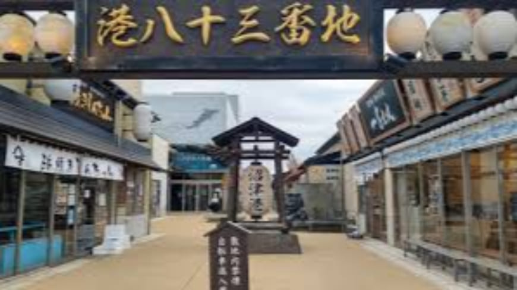
沼津港巨大提灯
定休日：無休 観光
営業時間：24時間
公式サイト
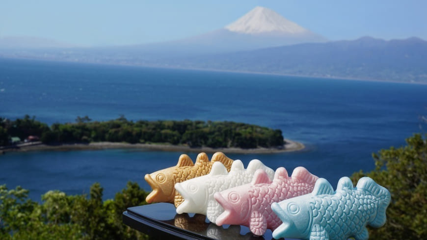
しーらかんすCafé
定休日：火曜日 飲食・喫茶
営業時間：平日11:00～16:00 休日11:00～17:00
公式サイト
沼津深海プリン工房
定休日：無休 飲食・デザート
営業時間：平・休日10:00～17:30
公式サイト
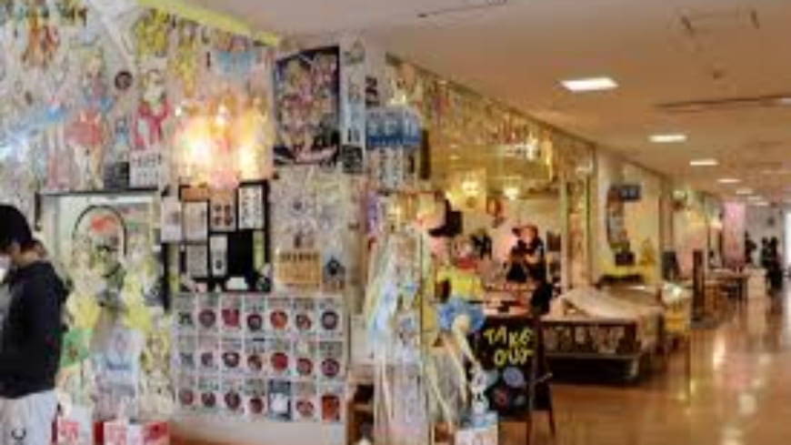
丸勘
定休日：火曜日 飲食・海鮮
営業時間：平・休日7:30～15:00
公式サイト
沼津深海プリン工房～青とプリンとジェラートと～
定休日：無休 飲食・デザート
営業時間：平日10:00～17:00 休日10:00～17:30
公式サイト
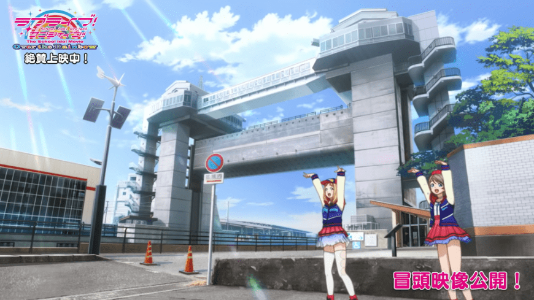
沼津港大型展望水門（びゅうお）
定休日：無休 観光
営業時間：木曜日10:00～14:00 木曜日以外10:00～20:00
公式サイト
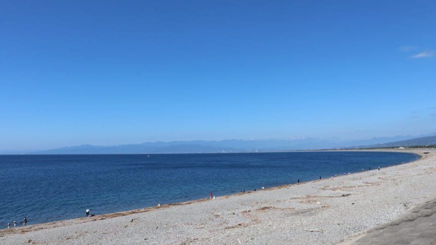
千本浜海岸
定休日：無休 観光
営業時間：24時間
公式サイト
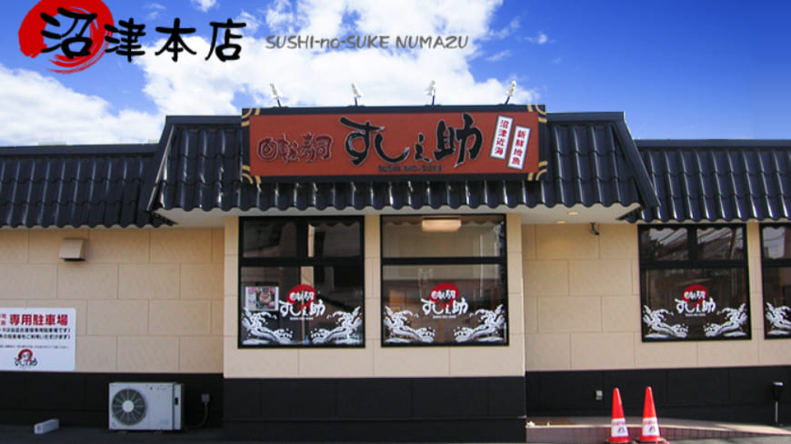
回転寿司沼津すし之助 沼津本店
定休日：無休 飲食・回転寿司
営業時間：平・休日11:30～21:15
公式サイト
ポートカフェ
定休日：火曜日 飲食・喫茶
営業時間：平・休日 12:30～18:00
公式サイト
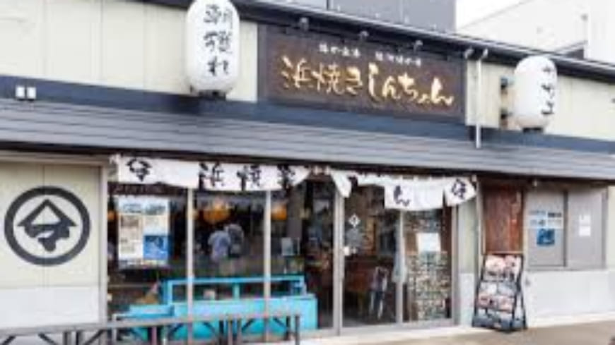
浜焼きしんちゃん
定休日：火曜日 飲食・海鮮
営業時間：平日 11:30～20:15 土曜日 11:00～22:00 日曜日 11:00～20:45
公式サイト
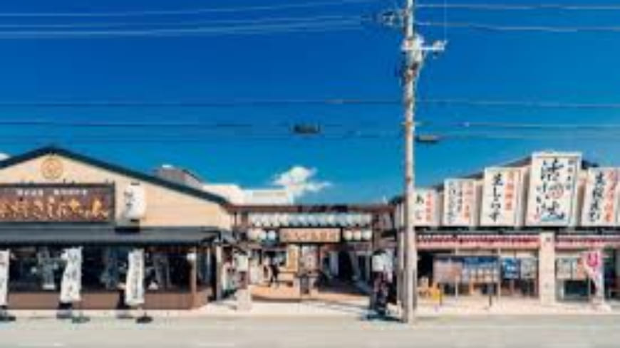
港八十三番地
定休日：無休 ショッピング
営業時間：平・休日 10:00～17:00
公式サイト
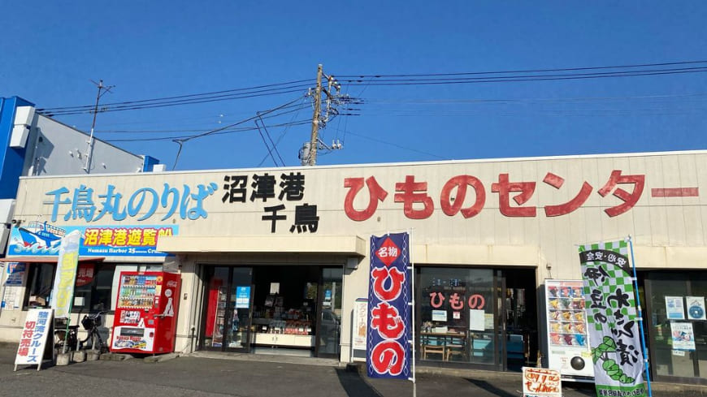
沼津港ひものセンター
定休日：無休 お土産・水産
営業時間：平・休日 9:00～17:00
公式サイト
海鮮丼佐政
定休日：木曜日 飲食・海鮮丼専門
営業時間：平日 9:30～17:00 休日 9:30～20:00
公式サイト
沼津みなと新鮮館
定休日：休館日は被り無し ショッピング
営業時間：平・休日 9:00～16:00
公式サイト
沼津かねはち
定休日：無休 飲食・居酒屋
営業時間：平日 10:00～17:00 休日 10:00～21:00
公式サイト
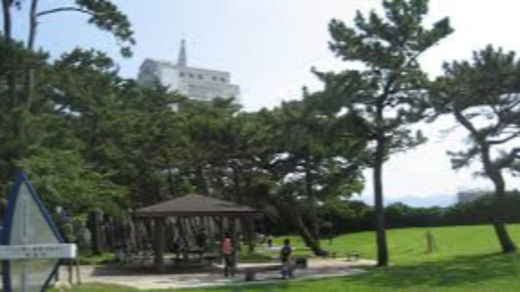
港口公園
定休日：無休 観光
営業時間：24時間
公式サイト